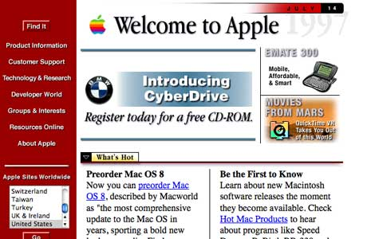

History of Web Design
The First Web page
The very first ever web page went live on August 6, 1991. It was made by Tim Berners-Lee. It was dedicated to information on the World Wide Web Project.These were text-only pages,as back then there was no visual elements yet made. There are no screenshots of the original page, but this was the closest copy, taken in 1992.
The First photo on the internet

In 1992 Berners-Lee rolled out an update of his browser that could support photos. His team decided to test it, the photo contains a pop parody group called Les Horribles Cernettes taken backstage by an IT developer.Following this it didn't take long for photos to be essential in the Web Design inudstry.Have you found a website without an image?
The First Ad on the Internet
In 1944 the first advertisment was made. The first banner ad was purchased by AT&T on HotWired.com. The add was clicked on by 44% of people who saw it. Since then banners became a trend in the 90's web design. In the modern time these ad banners are actually disliked by many of people. However these ad banners are still a great way for companies to integrate their own logo's onto websites.
Javascript
In 1995 one of the most important web programming languages was invented - Javascript. The original name of Javascript was Mocha and later, Livescript. The reason for the invetion was to allow Netscape developers to websites to automate behaviours in their web design.This allowed web design to have interactive elements such as drop-down menus and embedded forms in websites.
Flash
In 1996 Adobe flash came to life, back then it was called FutureSplash. This technology allowed web designers to make even better websites by intergratin animation, video and audio.Adobe flash is still around today, however these animations are not really used often. These animations still paved the way for the animation and video technology we have now.
CSS

The late 90's saw the invention of cornerstone technology in web design. Cascading Style Sheets, also known as CSS. The software was created by Hakson Wium Lie and Bert Boss in December 1996. CSS gave designer more control over the appearance of their websites. CSS seperates "HTML Content" from the visual content. It makes it more managable.
In Web design these six things are really the most important, although more inventions came out after. These are the foundation of Web Design, most other inventions branched from one of these six inventions.Web design has drastically improved, coding as a whole has never been more important.
| First Web page | Information on making webpages, and other educational information |
|---|---|
| First Photo | Photos and images have become a staple in every single webpage, since the very first photo |
| First Ad | Although sometimes a nuisance, ads are a stable in websites ranging froms banners to logos, and now even video ads being implimented |
| Javascript | Things would be a lot harder without this programming languages, java was definitly one fo th ebiggest foundation for web design, and one of the biggest help for developers |
| Flash | Without flash and these animations, websites wouldn't be the same. Media is very important on websites nowadays |
| CSS | Before CSS websites didn't look as good as they do now. CSS helped developers make their webpages look way better, and it made it more flexible for them |